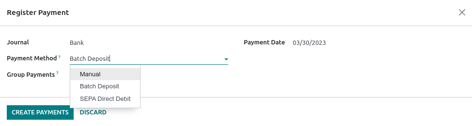

Batch payments by bank deposit¶
A batch deposit is a convenient way to group customer payments and deposit them into your bank account. The feature lets you list multiple payments and generate a detailed deposit slip with a batch reference. This reference can be used when reconciling to match bank statement lines with transactions in the batch deposit.
Configuration¶
Go to and tick Batch Payments to activate the feature.
Deposit multiple payments in batch¶
Register payments¶
Before performing a batch deposit, it is necessary to register each transaction’s payment. To do so, open the corresponding customer invoice and click Register Payment. In the pop-up window, select the Journal linked to your bank account and Batch Deposit as the Payment Method, and click Create Payment.
Add payments to a batch deposit¶
To add payments to a batch deposit, go to , and click New. Next, select the Bank and choose Batch Deposit as the Payment Method.

Click Add a line. In the pop-up window, tick all payments to include in the batch deposit, then click Select.

Once done, click Validate to finalize the batch deposit.
Tip
Click Print to download a PDF file to include with the deposit slip.
Bank reconciliation¶
Once the bank transactions are on your database, you can reconcile bank statement lines with the batch payment. To do so, go to the Accounting Dashboard and click Reconcile Items on the related bank account. Go to the Batch Payments tab to select a specific batch and click Validate to finalize the process.

Note
If a specific payment could not be processed by the bank or is missing, remove the related payment before reconciling.